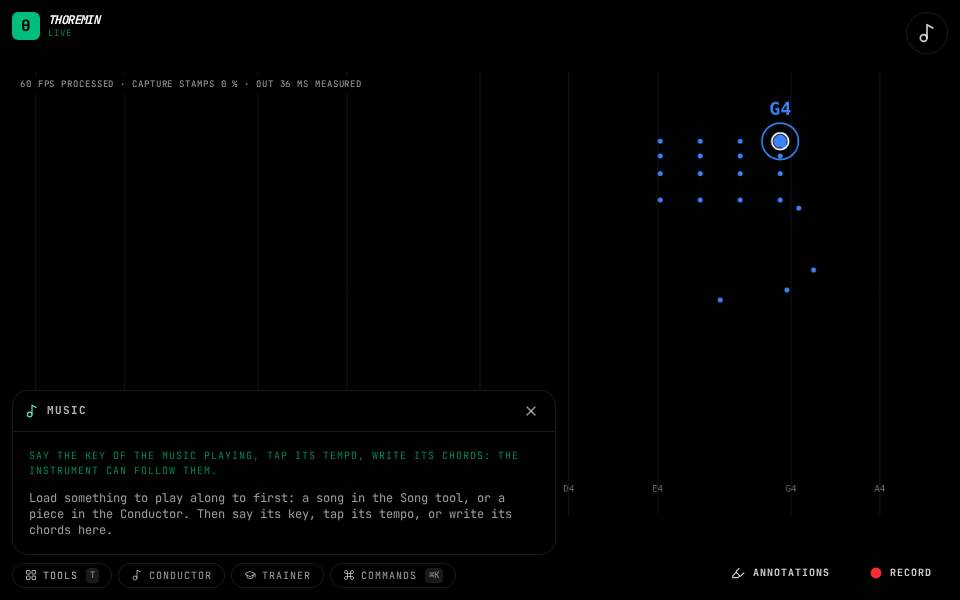

Music

What to do
- Load something to play along to: a song in the Song tool, or a piece in the Conductor.
- Open Tools, then Music, and choose its key, or tap Tap along with its beat from the first beat of a bar.
- Write its chords bar by bar, like C | F G | Am | G7, and press Save chart.
Tell the instrument what the music playing is doing when it cannot tell by itself: its key, its tempo and its chords. What you say is kept on this device for that piece, and comes back when you load it again.
Make the instrument follow it
In the instrument's settings, set Scale from to the music in the Music section: the instrument then plays in the key you chose, and changes key where your chart or the score does. In the Chord map, choose the music playing under Chords from to light up each chord of your chart on its beat.
Tap the tempo
Play the song, then tap Tap on its beats, starting on the first beat of a bar: after four taps the tempo is set, and that first tap is where bar 1 of your chart starts. Tap again to correct it; Forget goes back to the song's own beat.
Write the chords
Bars go between |, the chords in a bar share it equally: C | F G | Am7 | G7/B. % repeats the bar before, N.C. means no chord. A chord the tool cannot read is named under the box, and the chart is not saved until it reads.